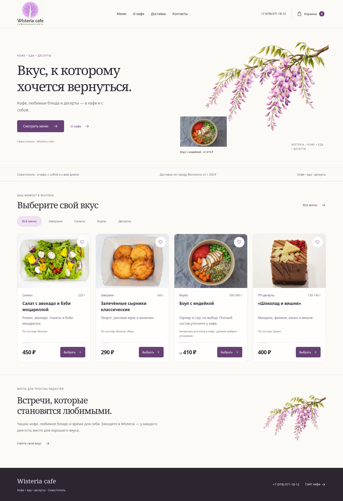
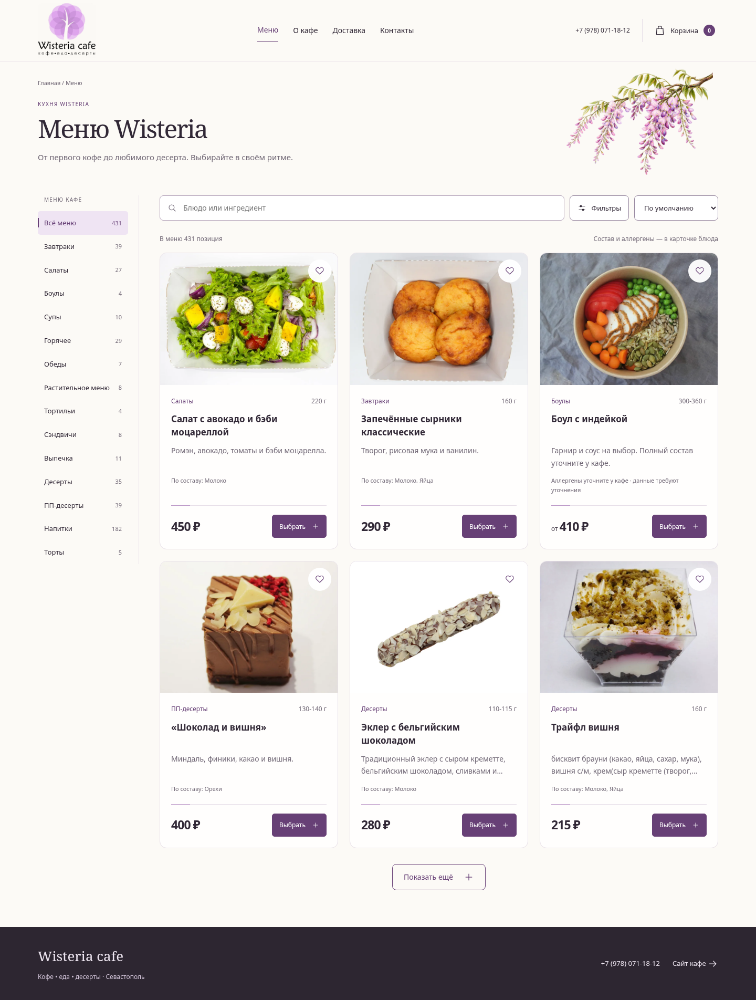
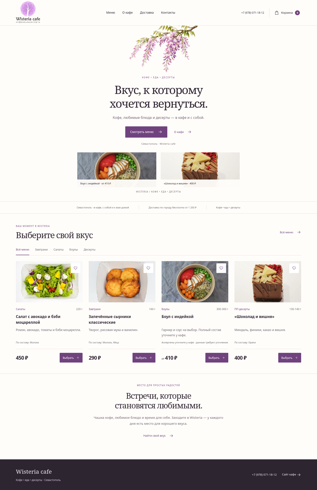
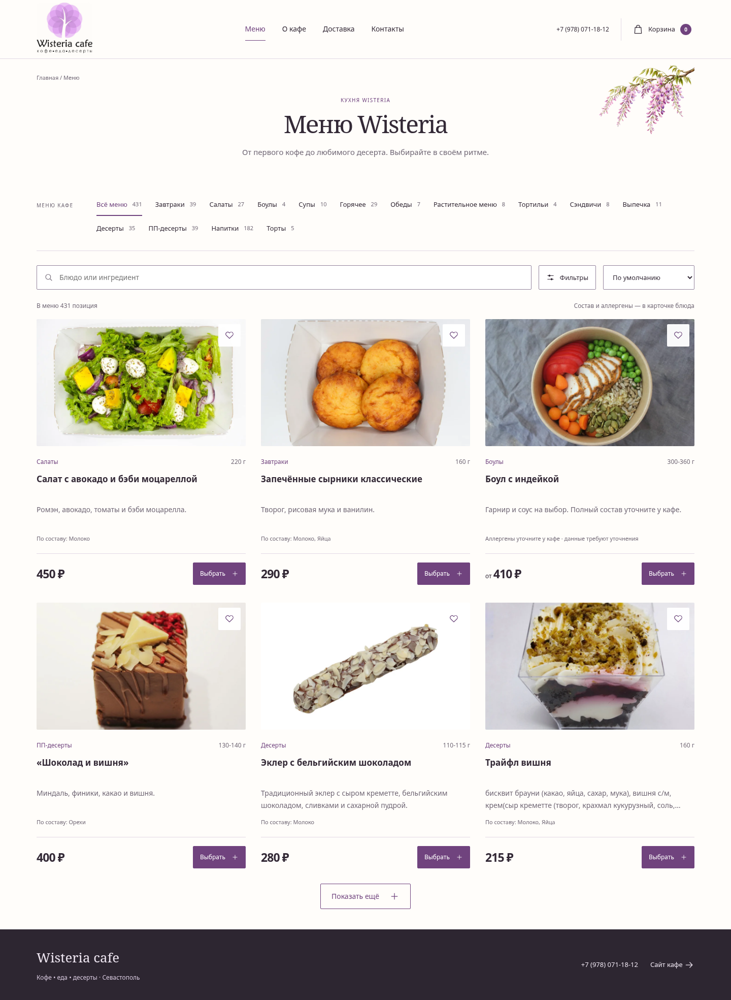
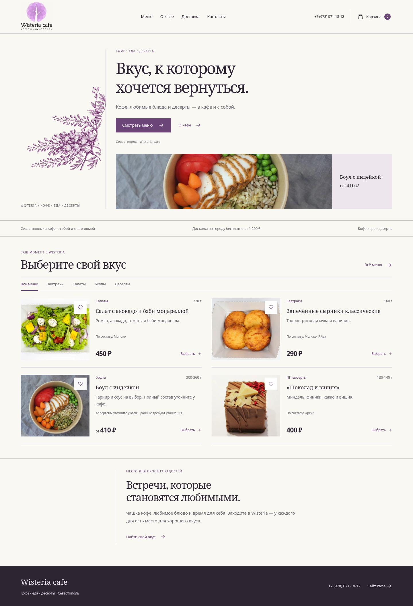
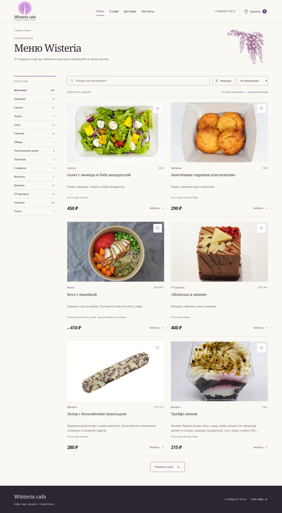
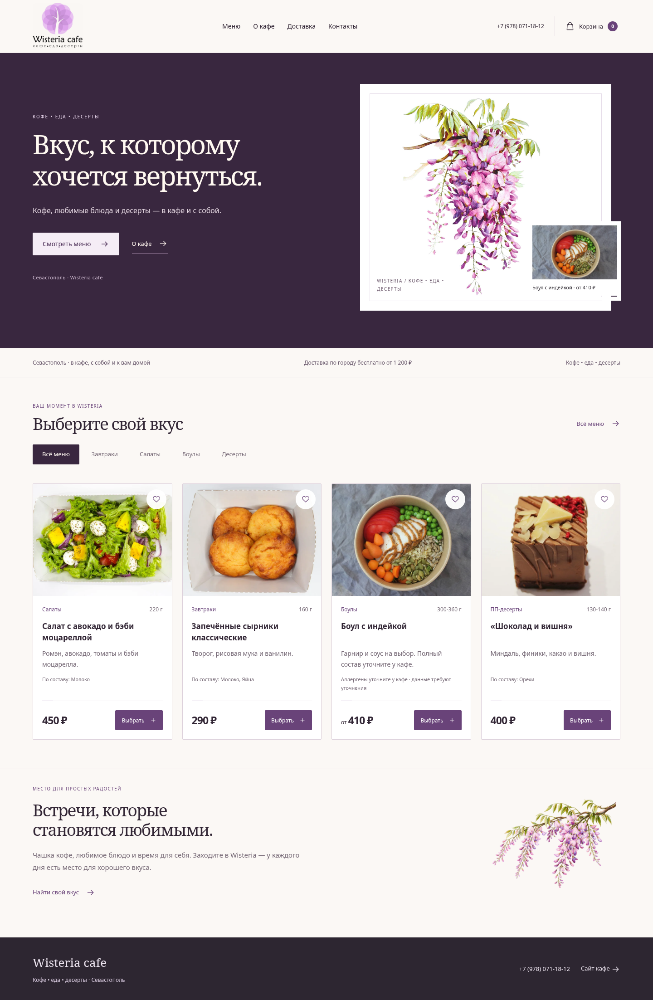
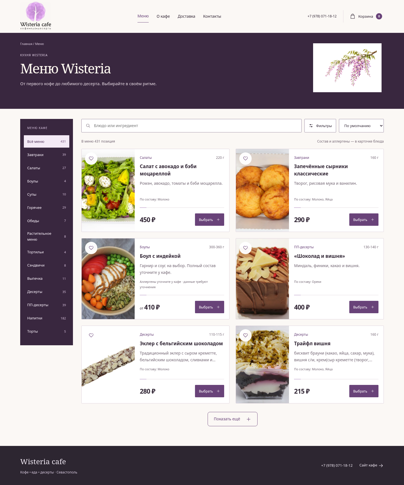
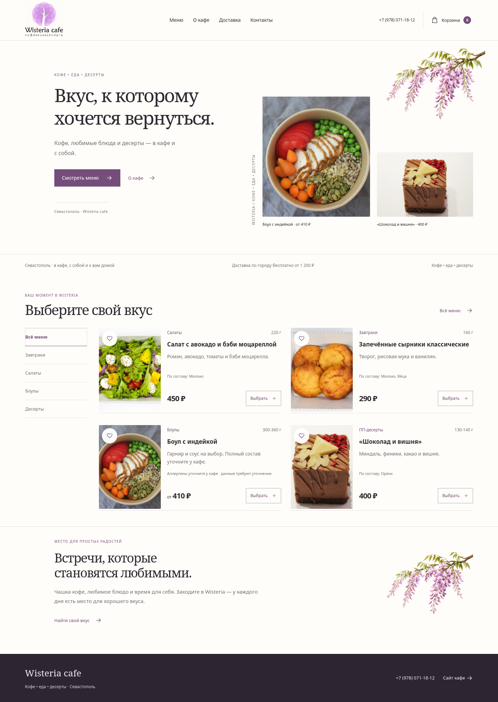
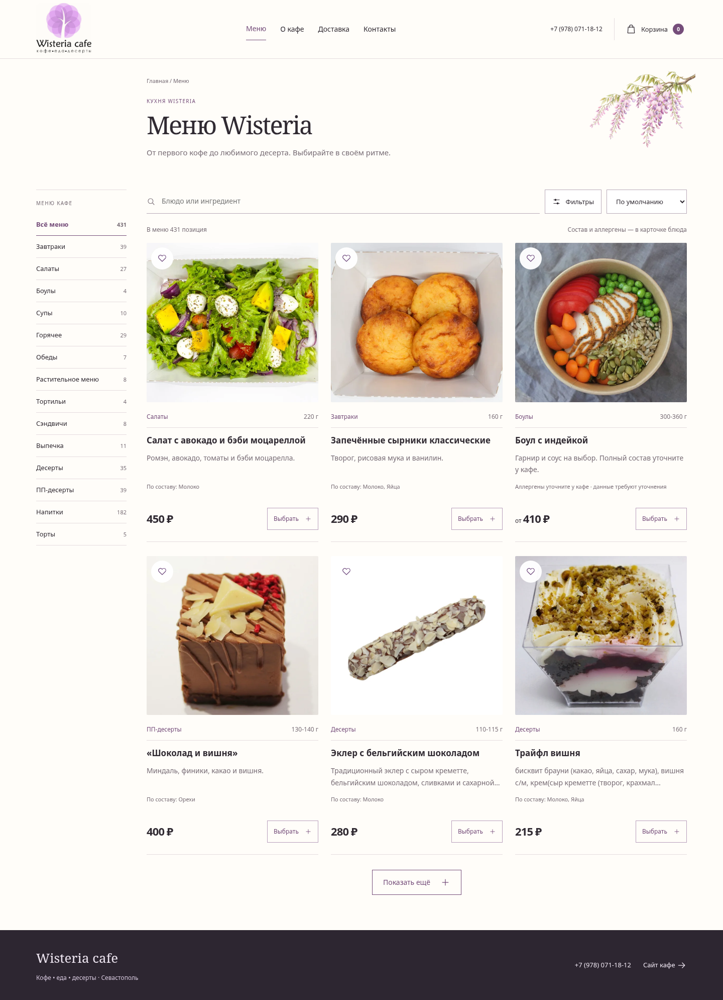

01
Акварельный сад

Главная
КаталогМягкие карточки, спокойная вертикальная навигация.
WISTERIA CAFE · 10 АРТ-НАПРАВЛЕНИЙ
01–05 · Акварель, редакционная сетка, контраст и архитектура

Главная
КаталогМягкие карточки, спокойная вертикальная навигация.

Главная
КаталогВоздушные карточки и категории в верхней ленте.

Главная
КаталогРедакционные товарные строки и тонкие разделители.

Главная
КаталогСветлые товарные строки на контрастной основе.

Главная
КаталогСмещение фото, модульная галерея и акцентные поля.